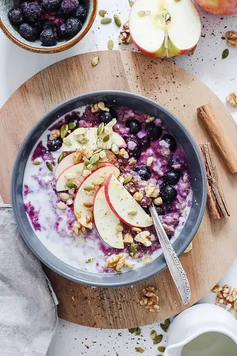

How to Make Oatmeal Taste Good: The Best Oatmeal Recipe

Ingredients
- ½ cup rolled oats (To make this gluten-free, just use gluten-free certified oats)
- 1½ cups of water
- ½-¾ cup frozen organic wild blueberries
- 1 Tbsp chopped walnuts
- 1 Tbsp ground flax seed
- ¼ tsp ground cinnamon
- ½ cup 1% organic milk (or ½ cup unsweetened soy milk, or ½ cup unsweetened almond milk)
- Optional: Agave, or Honey to taste (No more than 2 tsp honey or agave)
Steps
- Cook the oats with the water in the microwave for 2 minutes. Stir, and cook again in the microwave for 1-2 minutes more until all the water is absorbed
- Stir in the blueberries, cinnamon, flax seed, and walnuts.
- Stir in the the milk and agave/stevia/honey until the oatmeal is creamy and the consistency you like. Reheat the oatmeal as needed until it's at a desired temperature.
Recipe by Anjali Shah · The Picky Eater, from The Picky Eater. Saved here for personal use; the original has the full notes, tips and photos. Open original